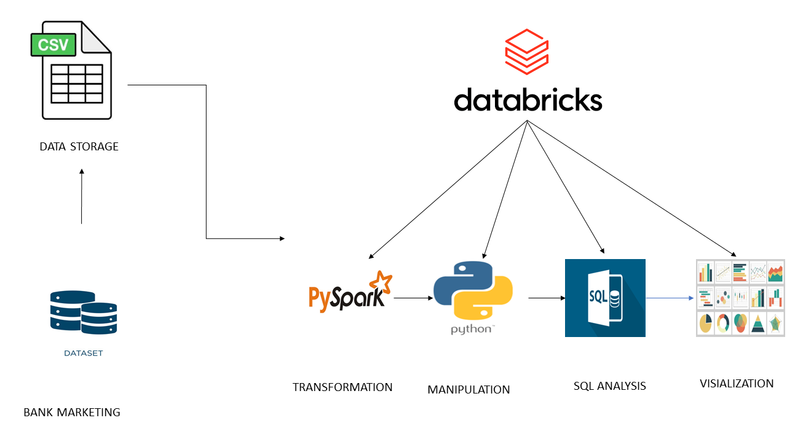
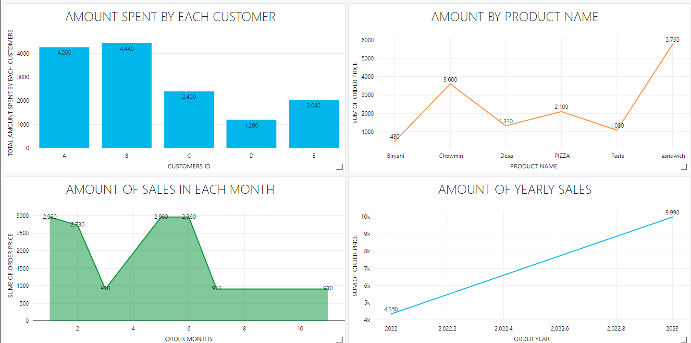
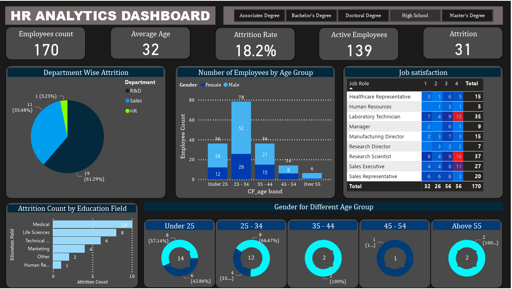
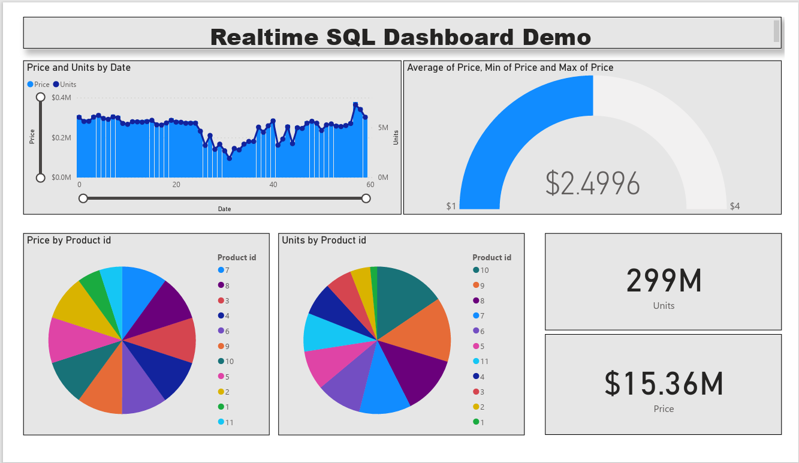
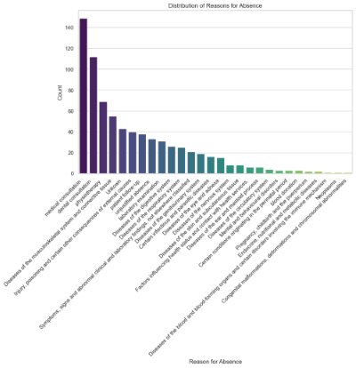
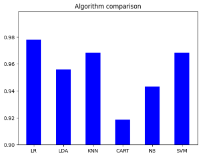
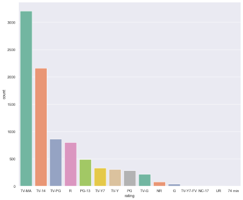
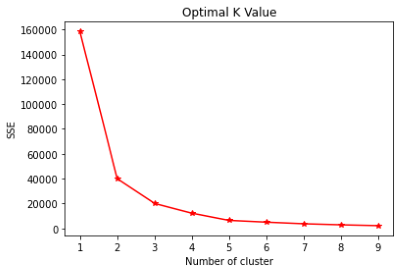

Project
BANK-MARKETING-ANALYSIS-USING-PYSPARK

1. Imported necessary libraries.
2. Data Transformation using pandas
3. Data manipulations using SQL
4. Performed some data analysis such as Campaign effectiveness, loan analysis, financial, and demographic analysis.
Tools and Technologies: Pyspark, Databricks,Python and SQL
Data Analysis Techniques: Data Extraction, Data transformation Data Calculation, Data Visualization, Data Manipulation
View more on github......
View more on Databricks
KPI developement and visualization using pyspark in Databricks

1. Imported necessary libraries.
2. Developed and build some certain KPI for buiness requirement usch as
a. Total amount spent by each customer
b. Total amount of sales in each month
c. Total sales by each country
d. how many time each product was purchased
E.T.C
Tools and Technologies: Pyspark, Databricks
Data Analysis Techniques: Data Extraction, Calculation, Data Visualization, Data Manipulation
View more on github......
View more on Databricks
YouTube Data scrape using API To Analyze and Visualize YouTube data

1. Imported necessary libraries.
2. Set up scripts to fetch YouTube data for listed channels.
3. The function `get_channel_stats` uses the YouTube Data API to retrieve and process statistics
(subscribers, views, videos, etc.) for given channel IDs, returning data as a list of dictionaries.
4. Created a function to process inputs and return relevant channel metrics.
5. Used pandas to load and convert data into dataframes.
6. Retrieved the playlist ID for the 'Yorubahood' channel from `channel_data`.
7. Retrieved all video IDs from a YouTube playlist using the YouTube Data API.
8. Extracted specific video details like title, likes, published date, views, dislikes,
and comments, then loaded and converted the data into a dataframe.
9. Visualized channel names by views and subscribers, highlighting Looper as having the highest
metrics.
10. Visualized monthly video details for the Yorubahood channel.
11. Scraped video details from specified channels and saved as a CSV file for further analysis
(Flamming Sword Ministries, Uchenna Mbunabo TV, Yorubahood, IBAKA TV, and Looper).
Tools and Technologies: python libraries and Youtube Data API Keys
Data Analysis Techniques: Data Extraction, Web scraping, Calculation, Data Visualization, Data Manipulation
View more......
Road Accident Analysis Dashboard Project Overview

1. The data was initially loaded into Power BI and subsequently transferred to the
Power Query environment,
where I transformed and cleaned the data.
2. Next, I transferred it
back to the Power BI environment for additional analysis.
3. I constructed a dashboard enabling visualization of crucial
information based on the requirement such as
a.Total Casualties and Total Accident values for Current Year and YoY growth
b.Monthly trend showing comparison of casualties for current year and previous year etc
Tools and Technologies: Power BI
Data Analysis Techniques: Data Extraction, Calculation, Data Visualization
View more......
HR Analytics Dashboard Project Overview

1. The data was initially loaded into Power BI and subsequently transferred to the Power Query environment,
where I transformed and cleaned the data.
2. Next, I transferred it
back to the Power BI environment for additional analysis.
3. I constructed a dashboard enabling visualization of crucial
information such as Attrition count by education field and job satisfaction.
Tools and Technologies: Power BI
Data Analysis Techniques: Data Extraction, Calculation, Data Visualization
View more......
Realtime-SQL-Demo-with-PowerBI-Dashboard: Project Overview

1. Several variables were declared for the following columns:
@pid INT = 0;: This line declares a variable @pid as an integer type and initializes it to 0.
@units INT = 0;: This line declares a variable @units as an integer type and initializes it to 0.
@price MONEY = 0;: This line declares a variable @price as a money type (representing currency)
and initializes it to 0.
2. I create a loop using the construct. This construct creates an infinite loop since the condition 1=1 is always true
3. Inside the loop, random values are generated for @pid, @units, and @price.
SET @pid = ROUND(RAND()*3, 0)+1;: Generates a random number between 1 and 3 (inclusive).
SET @units = ROUND(RAND()*10, 0)+1;: Generates a random number between 1 and 10 (inclusive).
Price calculation is based on the randomly generated @pid.
If @pid is 1, price is calculated as 10.10 times @units.
If @pid is 2, price is calculated as 6.00 times @units.
If @pid is 3, price is calculated as 9.2 times @units.
4. INSERT INTO Project_Demo_Table VALUES (GETDATE(), @pid, @units, @price);: Inserts a new row into the Project_Demo_Table with the current date and time, along with the values of @pid, @units, and @price generated in the loop.
5. After the loop completes, another SELECT statement is used to display all
data from the Project_Demo_Table. This will show the populated table with the simulated data.
Tools and Technologies: MySQL, Python, Pandas, Matplotlib
6. The data was loaded into Power BI to create visualizations such as charts, graphs, and tables based on the data from Project_Demo_Table. Power BI will automatically refresh the data according to your refresh settings,
providing live visualization as new data is inserted into the table
Data Analysis Techniques: Data Extraction, Optimization, Calculation, Data Visualization
View more......
HR Request to Data Analysis Team: Project Overview

1. Utilized MYSQL to generate a comprehensive list of employees
categorized as Healthy Individuals with Low Absenteeism, aligning
with the company's healthy bonus program, which had a total budget
allocation of $1000.
2. Conducted calculations pertaining to wage increase and annual
compensation specifically for non-smoking employees.
3. Implemented dataset optimization techniques using a combination
of MYSQL and Python.
4. Executed fundamental data analysis and visualization procedures
on the dataset to derive meaningful insights.
Tools and Technologies: MySQL, Python, Pandas, Matplotlib
Data Analysis Techniques: Data Extraction, Optimization, Calculation, Data Visualization
View more......
Breast Cancer Analysis and Prediction: Project Overview

1. A pivotal step during the preprocessing phase was the meticulous mapping of categorical classes.
2. The dataset underwent segregation into distinct X and y components for further analysis.
3. Exploratory analysis of categorical features was conducted through the creation of informative value count histograms.
4. The dataset was strategically split into training and testing sets, ensuring a robust evaluation of the model's predictive
capabilities.
5. Various machine learning algorithms underwent validation based on their accuracy scores.
6. Multiple machine learning algorithms were employed to predict outcomes with a focus on achieving optimal accuracy.
7. The model training and prediction phase were executed using a high-accuracy algorithm, ensuring precision in the analysis.
Tools and Technologies: Python, Pandas, Matplotlib, Machine Learning Algorithms
Data Analysis Techniques: Exploratory Data Analysis, Optimization, Calculation, Data Visualization, Model Training and Validation
View more......
-------
Hotel Data Analysis Team: Project Overview

1. Employed MYSQL to construct a comprehensive dataset.
2. Formulated SQL queries to extract pertinent information.
3. Delivered actionable insights to company stakeholders through data visualization and calculations, addressing inquiries such as:
a. Assessment of annual hotel revenue growth.
b. Evaluation of the need to expand the parking lot size.
c. Identification of trends in the dataset, particularly in daily rates and guest counts, to discern seasonality.
4. Established a connection to Power BI to enhance analytical capabilities and facilitate advanced calculations and visualizations.
5. Executed fundamental data analysis and visualization procedures on the dataset, extracting meaningful insights to inform strategic decision-making.
Tools and Technologies: MySQL, Power BI
Data Analysis Techniques: Data Extraction, Optimization, Calculation, Data Visualization
View more......
--------
Netflix Data Analysis: Project Overview

- Loading and Initial Exploration
- Isolation of TV Shows Released in 2021
- Temporal Trend Analysis
- Interpretation and Recommendations
- Recognition of Top Directors
- Enhanced Flexibility with Logical Operators
Tools and Technologies: Python, Pandas, Matplotlib, Seaborn
Data Analysis Techniques: Exploratory Data Analysis, Optimization, Calculation, Data Visualization
View more......
Top 250 IDMB Movie Analysis: Project Overview

- Utilize the requests library for web scraping to fetch the HTML content from the specified website.
- Save the extracted data, focusing on IMDb Top 250 Movies, into a CSV file utilizing the pandas library.
- Generate histograms or kernel density estimates to visually represent numerical variables associated with interactions.
- Categorize the dataset into distinct segments based on predefined criteria.
- Determine the optimized value for K, leveraging techniques such as the Elbow Method or Silhouette Score for K-means clustering.
- Offer a concise summary of the significant discoveries stemming from exploratory analysis and clustering outcomes.
- Present actionable insights or recommendations derived from the conducted analysis.
Tools and Technologies: Python, Pandas, Matplotlib, Seaborn, BeautifulSoup, HTML
Data Analysis Techniques: Exploratory Data Analysis, Calculation, Data Visualization
View more......
Online Payment Fraud Detection: Project Overview

- Developed an efficient fraud detection system that can identify and flag potentially fraudulent online payment transactions in real-time.
- The project begins by collecting a dataset containing historical online payment transaction records.
- Data preprocessing involves cleaning and transforming the data into a suitable format for machine learning.
- The Decision Tree Classifier is the central machine learning algorithm employed in this project. Decision trees are well-suited for fraud detection as they can model complex decision boundaries and are interpretable, making it easier to understand why a particular transaction is flagged as fraudulent.
- The algorithm learns from historical data, utilizing the various features to create a tree-like structure that can classify transactions as either legitimate or potentially fraudulent.
- Transactions flagged as potentially fraudulent trigger alerts or further investigation by the payment platform's security team.
Tools and Technologies: Python, Pandas, Matplotlib, Seaborn, Machine Learning algorithm
Data Analysis Techniques: Exploratory Data Analysis, Calculation, Model Training and Validation
View more......